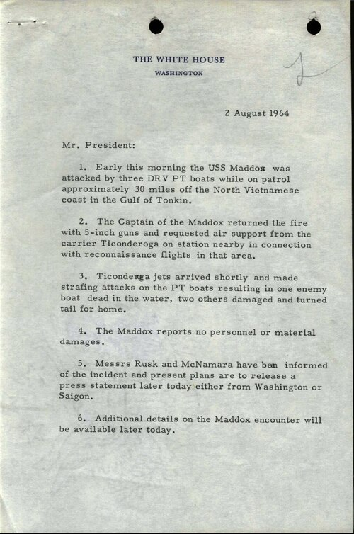

FILE TFF-06 // 1964 VIETNAM
Gulf of Tonkin Incident

CALIBRATED CONCLUSION: The second attack did not occur; deliberate coordinated fabrication is not established.
Specific allegation
Claim: a second North Vietnamese attack on U.S. ships on 4 August did not occur; officials may have knowingly used it as a pretext for escalation.
Event chronology
USS Maddox exchanged fire on 2 August. Two days later Maddox and Turner Joy reported another attack amid poor weather, sonar confusion, and radio traffic. Congress soon passed a resolution expanding presidential war authority.
Evidentiary record
Declassified NSA histories show the second attack was misreported; signals were selectively interpreted and crews later doubted an attack occurred. The 2 August clash did happen, though context is debated.
Independent and contrary evidence
Later official review concluded there was no second attack. Mistaken analysis and selective presentation do not prove every official deliberately fabricated it.
Known uncertainty
Public statements omitted uncertainty, but covert U.S.-South Vietnamese operations complicate the context. Historians differ about what policymakers knew during the congressional debate.
Falsifiable evidence requirements
Raw sonar, intercepts with metadata, ship logs, and time-stamped decision records could distinguish analytic error from intentional deception. Evidence officials saw reliable disconfirmation before making claims would matter.
Sources and limitations
- U.S. Senate Gulf of Tonkin hearingsUsed to document the congressional account and intelligence record of the alleged second attack in the primary record. Limitation: it does not settle the difference between a false report, selective analysis, and knowing intent.
- NSA, “Skunks, Bogies, Silent Hounds”Used to compare the chronology and interpretation of the congressional account and intelligence record of the alleged second attack. Limitation: conclusions depend on the difference between a false report, selective analysis, and knowing intent.
- Robert J. Hanyok, “Spartans in the Darkness”Used as an independent check on the congressional account and intelligence record of the alleged second attack. Limitation: it cannot alone establish the difference between a false report, selective analysis, and knowing intent.